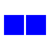
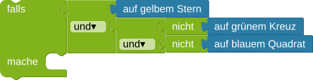

Der Roboter soll alle Dominosteine mit zwei blauen Quadraten

einsammeln.
aufStern() True.
aufQuadrat() , als auch die Bedingung aufKreuz()
True.
Um nur die korrekten Steine aufzuheben musst du die Bedingungen geschickt ineinander schachteln.
Zum Beispiel beschreibt diese Bedingung exakt den Stein mit zwei orangenen Sternen:

if aufStern() and not aufQuadrat() and not aufKreuz(): hebeDominosteinAuf()